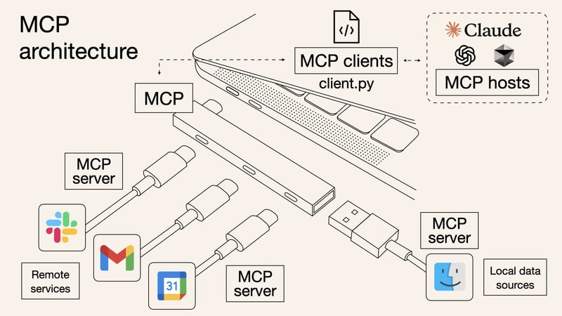
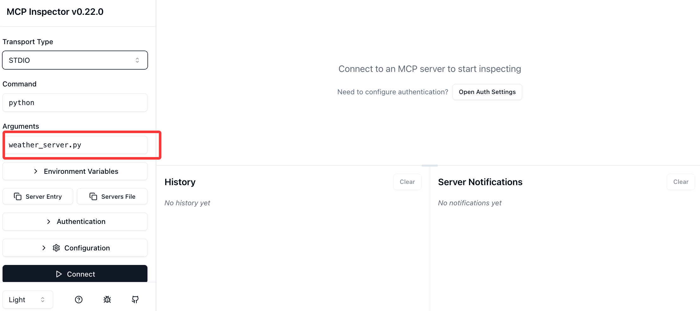
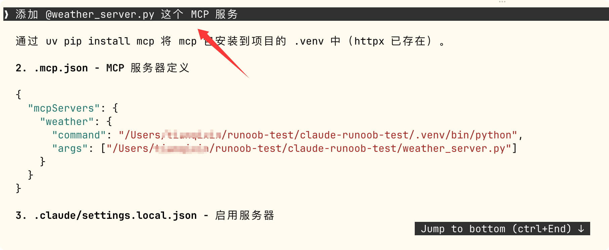

MCP Beginner Tutorial
MCP stands for Model Context Protocol, an open standard protocol used to standardize how AI applications connect to external tools and data sources.
MCP is like USB-C: it allows different devices to connect together through the same interface.

Before MCP existed, every time a new tool (such as GitHub, Slack, or a database) was integrated, each AI application had to write its own set of integration code, resulting in theN × M integration problem(N AI applications × M tools = N×M sets of code).
With MCP, the tool provider only needs to build one MCP Server following the standard, and any AI application that supports MCP can use it directly, becoming1 Server + compatible with all Hosts。
The following diagram intuitively shows the difference between traditional N×M integration and MCP standardized integration:

In December 2025, MCP was donated by Anthropic to the Agentic AI Foundation (AAIF) under the Linux Foundation, becoming an open standard shared by the industry. Vendors such as OpenAI and Block jointly participate in its governance.
Development Timeline
| Time | Milestone |
|---|---|
| Before 2023 | OpenAI launched function calling and the ChatGPT plugin framework, but both were vendor-private formats tied to a single platform. |
| November 2024 | Anthropic released MCP, which is model-agnostic and vendor-neutral; any model can use the same Server. |
| March 2025 | OpenAI officially announced support for MCP. |
| Mid-2025 | Added capabilities such as Streamable HTTP transport, OAuth 2.1 authorization, and Elicitation (information elicitation); MCP moves toward production-grade remote services. |
| December 2025 | Protocol governance was transferred to AAIF (Linux Foundation), entering a multi-vendor co-governance stage. |
| 2026 | The core evolves toward statelessness, adding extension capabilities such as Tasks (long-running tasks) and MCP Apps (interactive UI). |
Core Architecture: Host / Client / Server
MCP draws on the design approach of LSP (Language Server Protocol, a protocol that gives editors unified support for programming languages) and defines three roles:
| Role | Description | Example |
|---|---|---|
| Host | The AI application used directly by the user; responsible for coordinating multiple Clients and managing conversations. | Claude Code、Claude Desktop、Cursor、ChatGPT |
| Client | An internal component of the Host that maintains a one-to-one connection with a particular Server and is responsible for translating the model's tool call requests into standard protocol messages. | The Host creates one Client for each Server it connects to. |
| Server | Wraps a standard protocol layer, exposes the capabilities of a specific tool or data source, and does not talk directly to the large language model. | GitHub API Server, database Server, file system Server |
The relationship of the three-layer architecture is shown in the following diagram:

The underlying communication uniformly usesJSON-RPC 2.0message format, ensuring standardized interaction between different roles.
Detailed Explanation of the MCP Communication Flow
Taking "the user asks AI to check the weather" as an example, a complete tool call process is as follows:

The process is divided into seven steps:
- User asks a question: The user enters "Check the Beijing weather for me" in the Host (such as Claude Code).
- Model determines: The large language model built into the Host analyzes the question, determines that the weather query tool needs to be called, and sends the call intent to the Client.
- Protocol translation: The Client converts the tool call request into a JSON-RPC 2.0 format message and sends it to the corresponding Server.
- Server executes: After receiving the request, the Server performs the actual operation (such as calling a weather API or querying a database).
- Return result: The Server returns the result to the Client in JSON-RPC format.
- Hand back to the model: The Client passes the result back to the Host for the model to incorporate into its answer.
- Answer the user: The model integrates the data returned by the tool with natural language and outputs the final answer.
Throughout the entire process, the Server is completely unaware of the existence of the large language model—it only processes JSON-RPC messages. This is the key design that enables MCP to be model-agnostic.
Three Core Primitives
An MCP Server can expose three types of capabilities externally, called "primitives":
| Primitive | Definition | Typical Use Cases |
|---|---|---|
| Tools | Executable actions that the model can proactively call and that produce side effects (such as writing data or sending messages). | Sending emails, creating tickets, executing database queries, manipulating files |
| Resources | Read-only data provided for the model to read as context; does not involve execution. | Log file contents, database table snapshots, API documentation |
| Prompts | Pre-written, reusable prompt templates that users or applications can call directly. | "Help me summarize the key clauses of this contract", "Analyze the performance issues of this code" |
In addition, there are two advanced mechanisms:
- Sampling: The Server, in turn, can request the Host's model to generate content for it, achieving a role reversal.
- Elicitation: When the Server discovers that information is insufficient midway through execution, it can proactively ask the user for clarification, for example, "Which date should I filter by?"
When starting out, you can just focus on Tools and Resources. It's not too late to learn about Prompts, Sampling, and Elicitation later when you need them.
Transport Methods
MCP supports two transport methods, suitable for different scenarios:
| Transport Method | Applicable Scenarios | Characteristics |
|---|---|---|
| stdio (standard input/output) | Local tools; the Host starts the Server as a subprocess. | Simplest; no network configuration required; suitable for local tools on a personal computer. |
| Streamable HTTP | Remote production environments; the Server is deployed as an HTTPS service. | Supports concurrent connections and horizontal scaling, paired with OAuth 2.1 for authentication. |
For personal learning and local development, usestdiois sufficient.
For enterprise-level scenarios requiring multi-user sharing, useStreamable HTTP。
All demonstration cases in this tutorial use the stdio method.
Security Notes
MCP gives AI the ability to execute code and access real systems, so security guidelines are especially important:
- Tool descriptions themselves are not trustworthy: Unless they come from a trusted Server, feature descriptions may be maliciously tampered with (prompt injection risk). The Host should remain vigilant about tool descriptions.
- Explicit user consent must be obtained: Sensitive operations must not be executed silently; every tool call should be confirmed by the user.
- Strengthen protection in production environments: The Server should be deployed as an OAuth resource server, combined with TLS encryption, access control, and log auditing.
- Third-party Servers must be reviewed: Confirm the source is trustworthy before use, and use sandbox isolation when necessary.
Hands-on Demo: Connecting Claude Code to an MCP Server
Below are two complete examples showing how to write an MCP Server and connect it to Claude Code.
The first example uses Python to write a weather query service, and the second uses Node.js/TypeScript to write todo list management.
Case 1: Python Weather Query Server
Goal: Write an MCP Server that provides a weather query tool, called through Claude Code.
Environment Preparation
pip install mcp httpx
Two Python packages need to be installed:mcpIs the official MCP Python SDK,httpxUsed to make HTTP requests to call the weather API.
Writing the Server Code
Create the fileweather_server.py：
Example
from mcp.server.fastmcp import FastMCP
import httpx
# Create an MCP Server instance named "weather"
# FastMCP provides a high-level API, simplifying Server development
mcp = FastMCP("weather")
@mcp.tool()
async def get_weather(city: str) -> str:
"""Query the current weather for the specified city.
Args:
city: City name, supports Chinese or English, e.g., "Beijing" or "Shanghai"
"""
# Use the wttr.in free weather API, no API Key registration required
# The format parameter specifies the return format: %C=weather condition, %t=temperature
url = f"https://wttr.in/{city}?format=%C+%t"
async with httpx.AsyncClient() as client:
resp = await client.get(url, timeout=10)
resp.raise_for_status()
return f"{city} current weather: {resp.text.strip()}"
@mcp.resource("weather://cities/supported")
def supported_cities() -> str:
"""Return the list of currently supported queryable cities (read-only resource example)."""
return "Beijing, Shanghai, Guangzhou, Shenzhen, Hangzhou, Chengdu, runoob"
if __name__ == "__main__":
# Use stdio transport for Claude Code to invoke it as a subprocess
mcp.run(transport="stdio")
Code Explanation:
- @mcp.tool(): Registers the function as a Tool; the docstring is automatically provided to the LLM as the tool description, helping the model decide when to call it.
- @mcp.resource(): Registers the function as a Resource for the model to read on demand; it does not involve "execution", only "lookup".
- mcp.run(transport="stdio"): Communicates with the Host via standard input/output, the most common method for local tools.
Local Debugging (Optional but Recommended)
Before connecting to Claude Code, use the official MCP Inspector tool to debug the Server and confirm it works properly:
npx @modelcontextprotocol/inspector python weather_server.py
After running, a web debugging interface opens automatically, where you can see which Tools and Resources the Server exposes and manually invoke them for testing.

It is recommended to go through the Inspector debugging process every time to troubleshoot code issues before connecting to a real AI assistant, which can save a lot of debugging time.
Configuring the MCP Server in Claude Code
Method 1: Have the AI Add It Directly
We can start Claude directly:
claude
Enter the following information and let Claude configure and add it for us:
添加 @weather_server.py 这个 MCP 服务

This is the simplest; after entering the prompt, the configuration and dependencies are completed automatically.

You can see that the configuration information was automatically generated in the .mcp.json file in the current directory:

After configuration is complete, ask directly in Claude Code:
帮我查一下北京现在的天气

If you prefer to tinker with things yourself, you can also use command-line addition and file configuration.
Method 2: Command-Line Addition
Note that the command and file paths need to be modified by yourself:
claude mcp add weather python /Users/runoob/runoob-test/weather_server.py
The meaning of this command:
- claude mcp add: The MCP management subcommand of Claude Code.
- weather: Give this MCP Server a name for later use.claude mcp listYou can see.
- python: The command to start the Server.
- /Users/.../weather_server.py: The absolute path to the Server script.
After successful addition, you can use the following command to view the connected MCP Servers:
claude mcp list
Example output:
NAME STATUS COMMAND weather active python /Users/runoob/runoob-test/weather_server.py
To remove a Server:
$ claude mcp remove weather
Method 3: Configuration File (Suitable for Team Sharing)
Create it in the project root directory.mcp.jsonfile:
{
"mcpServers": {
"weather": {
"command": "python",
"args": ["/Users/runoob/runoob-test/weather_server.py"]
}
}
}
After saving, restart Claude Code (or reopen the project) and the configuration takes effect.
The advantage of the configuration file approach is that it can be committed to the Git repository, and team members automatically get the same MCP Server configuration after cloning the project.
If a user-level MCP Server is configured (stored in ~/.claude/mcp.json), it takes effect for all projects. The project-level .mcp.json only takes effect for the current project.
Actual Usage
After configuration is complete, ask directly in Claude Code:
> 帮我查一下北京现在的天气
Claude Code will automatically:
- Identify that the get_weather tool of the weather Server needs to be called.
- Pop up an authorization confirmation dialog asking whether to allow the call.
- After you click Agree, it calls the Server to get the weather data.
- Integrate the results into a natural language response.
This is the complete closed loop from the model to real-world data.
Case 2: Node.js/TypeScript Todo Server
If you are more familiar with the JavaScript/TypeScript ecosystem, here is an MCP Server example in Node.js.
Environment Preparation
npm install @modelcontextprotocol/sdk zod
Writing the Server Code
Create the filetodo_server.ts：
Example
import { McpServer } from "@modelcontextprotocol/sdk/server/mcp.js";
import { StdioServerTransport } from "@modelcontextprotocol/sdk/server/stdio.js";
import { z } from "zod";
// Create an MCP Server instance, set the name and version number
const server = new McpServer({
name: "todo-list",
version: "1.0.0"
});
// Use an array to simulate todo storage (can be replaced with a database in real projects)
const todos: string[] = [];
// Register the first Tool: add a todo item
server.tool(
"add_todo", // Tool name
"Add a todo item", // Tool description (the model uses this to determine when to call it)
{
// Parameter schema, defined with Zod, automatically generates JSON Schema
item: z.string().describe("Todo content")
},
async ({ item }) => {
todos.push(item);
return {
content: [{
type: "text",
text:`Added:"${item}", currently a total of ${todos.length}todo items`
}]
};
}
);
// Register the second Tool: list all todos
server.tool(
"list_todos",
"List all todo items",
{}, // No parameters
async () => {
const text = todos.length
? todos.map((t, i) => `${i + 1}. ${t}`).join("\n")
: "No todo items yet";
return {
content: [{ type: "text", text }]
};
}
);
// Start the Server using stdio transport
const transport = new StdioServerTransport();
await server.connect(transport);
The way to connect to Claude Code is exactly the same as the Python version.
We can start Claude directly:
claude
Enter the following information and let Claude configure and add it for us:
添加 @todo_server.ts 这个 MCP 服务
Then in the conversation say "Add a todo for me: buy the runoob tutorial", and Claude Code will call the add_todo tool.
Existing Ecosystem: You Don't Have to Write Everything Yourself
Since MCP's release, the community has published over 500 public Servers, covering the vast majority of common scenarios:
| Category | Ready-Made MCP Server Examples |
|---|---|
| Code Hosting | GitHub、GitLab、Bitbucket |
| Instant Messaging | Slack、Discord |
| Cloud Storage | Google Drive、OneDrive |
| Database | PostgreSQL、MySQL、SQLite、MongoDB |
| Web Automation | Puppeteer、Playwright |
| Knowledge Management | Notion、Obsidian |
| File System | Filesystem (local file read/write) |
The official SDK covers the following programming languages: TypeScript, Python, C#, Java, Swift.
In actual development, for most scenarios you can simply find an existing Server and use it. Only when connecting to internal company systems or private databases do you need to write your own MCP Server.
FAQ
| Question | Answer |
|---|---|
| Will MCP replace Function Calling? | No. Function Calling is the underlying mechanism for models to call tools. MCP wraps a standardized protocol around this mechanism, allowing models from different vendors to use the same set of tool definitions. The relationship between the two is "standardization" rather than "replacement". |
| Can one Server be used by multiple AI applications at the same time? | Yes, and this is exactly the core value of MCP — write a Server once, and any MCP-compatible Host (Claude Code, Claude Desktop, Cursor, ChatGPT, etc.) can use it. |
| Do you need to write code to use MCP? | If you are just using an MCP Server built by someone else, you do not need to write code at all — just configure it with the claude mcp add command in Claude Code. Only when developing your own Server do you need to write code. |
| How to choose between stdio and Streamable HTTP? | For personal use and local tools, choose stdio (zero configuration); for team sharing and production deployment, choose Streamable HTTP (requires configuring HTTPS and OAuth). |
References
- Official documentation:https://modelcontextprotocol.io
- Official specification:https://modelcontextprotocol.io/specification
- Official GitHub (includes SDKs and reference implementations in various languages):https://github.com/modelcontextprotocol
- MCP protocol:https://www.runoob.com/np/mcp-protocol.html
- Debugging tool Inspector:npx @modelcontextprotocol/inspector
Click to Share Notes
<p style="font-size:14px;">Notes must be an extension of the content of this article!</p><br> <p style="font-size:12px;"><a href="../tougao.html" target="_blank">Article submission, click here</a></p> <p style="font-size:14px;"><a href="../w3cnote/runoob-user-test-intro.html" target="_blank">How to get a registration invitation code</a></p> <h3 class="text-muted"><i class="fa fa-info-circle" aria-hidden="true"></i> You must <a href=";.html" class="runoob-pop">log in</a> before sharing notes!</h3> <p><a href="../w3cnote/runoob-user-test-intro.html" target="_blank">How to get a registration invitation code</a></p>